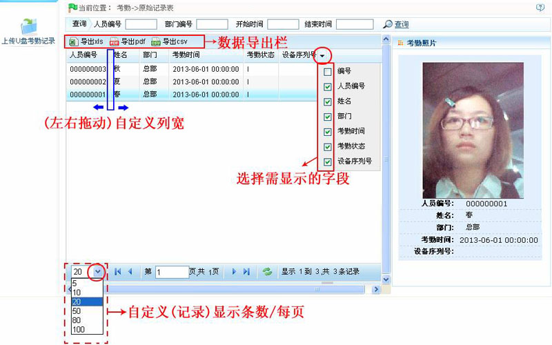
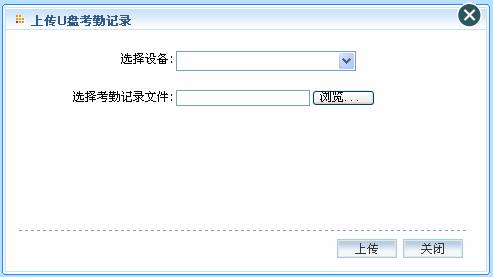

7.6.1 原始记录表
原始记录表：显示所有员工的考勤记录，包含考勤机上传以及补签卡的考勤记录。
点击【考勤】 【原始记录表】，进入原始记录表页面，主界面默认显示所有人员（包含补签卡信息）的考勤情况列表。原始记录表显示有考勤记录的人员的考勤信息。
【原始记录表】，进入原始记录表页面，主界面默认显示所有人员（包含补签卡信息）的考勤情况列表。原始记录表显示有考勤记录的人员的考勤信息。

（1）、用户可根据需要导出原始记录表，可导出为“xls”、“pdf”或“csv”格式的文件。导出报表的具体方法，请参见附录1 常用操作中的5. 导出。
（2）、用户根据需要选择原始记录表需显示的字段（打勾选中后，即显示）。
（3）、用户可根据需要（左右拖动）自定义列宽。
（4）、用户可根据需要自定义原始记录表每页的记录显示条数。
（5）、单击考勤记录所在行，可在右边的考勤照片框中查看对应的考勤照片。
-
 上传U盘考勤记录：将用户从设备下载到U盘内的考勤记录，导入到考勤系统中。
上传U盘考勤记录：将用户从设备下载到U盘内的考勤记录，导入到考勤系统中。
1、单击原始记录表页面上的【上传U盘考勤记录】图标，弹出如下图所示上传U盘考勤记录窗口：

选择设备：单击选择设备后的按钮，在弹出的设备下拉框中选择设备。
选择考勤记录文件：单击【浏览】按钮，在弹出如下选择文件窗口：

选中需上传的考勤记录文件，并单击【打开】按钮，或直接双击该文件，完成选择考勤文件操作。
2、设置完成后，单击【上传】按钮，将考勤记录文件中的考勤记录上传到被选中的设备中。